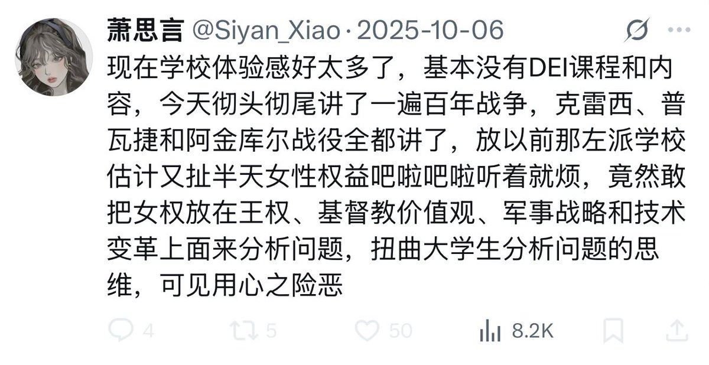

现在学校体验感好太多了，基本没有化工课程和内容，今天彻头彻尾讲了一遍普化原理，有机机理和晶体结构等等全都讲了，放以前那学界氛围估计又扯半天工艺流程吧啦吧啦听着就烦，竟然敢把化工技术原理放在实验课、有机化学，分析化学和物理化学上面来分析问题，扭曲化学生分析问题的思维，可见用心之险恶


现在学校体验感好太多了，基本没有走资课程和内容，今天彻头彻尾讲了一遍解放历程，整风、土改和镇反等等全都讲了，放以前那学界氛围估计又扯半天公民自由吧啦吧啦听着就烦，竟然敢把资产阶级自由化放在毛主席、共产主义、军政战略和阶级斗争上面来分析问题，扭曲大学生分析问题的思维，可见用心之险恶 https://t.co/ZlNK6qafTA